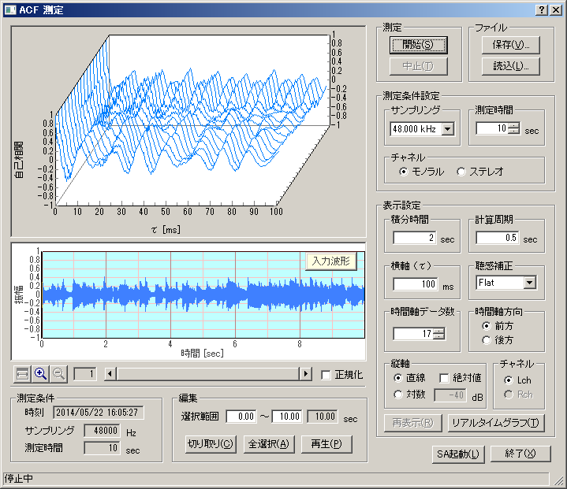

DSSF3 > RA > ACF/CCF測定 > 測定ガイド
測定開始
ACF測定の[開始]ボタンをクリックすると、信号の記録が開始され、指定した測定時間分のデータが録音されます。同時に、音響信号の振幅の入力波形表示グラフと、ACFの正規化波形の遅れ時間と、計算周期の3次元表示がリアルタイムで計算表示されます。

表示設定の変更、再表示
測定終了後に、再度条件設定を変更して[再表示]ボタンをクリックすると、再計算された分析結果がグラフ表示されます。
入力波形の編集
入力波形の振幅グラフは、横軸が時間で、入力信号の音圧レベルの大きさの時間変化が表示されます。この場合、通常パソコンの扱える最大信号をMAXの1としています(デジタル値)。それに対して、正規化は、そのときの入力信号の最大を1として拡大表示します。これは信号の入力レベルが小さい場合に有効で、正規化ボックスをチェックすると信号が最大振幅1に拡大表示されます。また[再生]ボタンをクリックすると、録音された音をそのまま再生することができます。また、入力波形のグラフの時間軸上にマウスを持っていき、開始時間と終了時間をドラッグして選択（水色の部分）し、[切り取り]ボタンをクリックすると、指定された範囲のデータのみ切り取られ、余分なデータを取り除くことができます。また、右クリックで範囲を指定することもできます。
DSSF3 > RA > ACF/CCF測定 > 測定ガイド